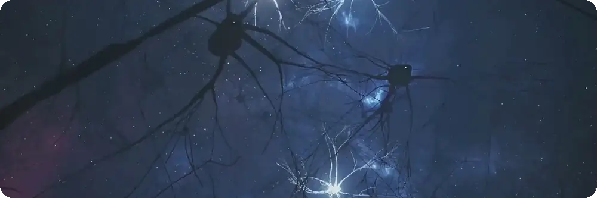
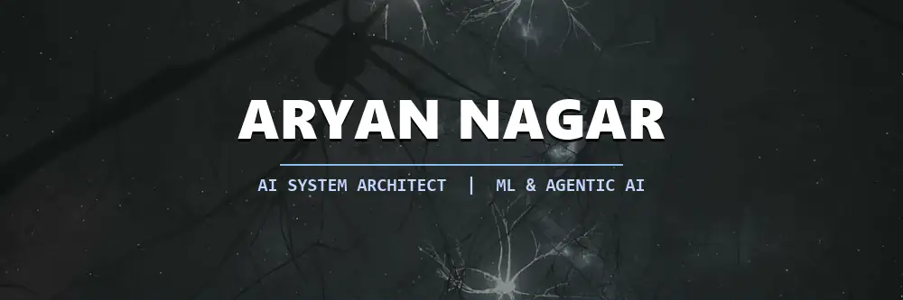
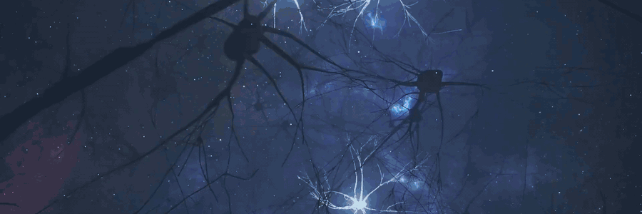

1000×333, 12 fps, full 6.4 s loop, 1.1 MB animated WebP. Cropped from the 1080p clip to a 3:1 banner.

884 KB. Text is baked into the frames, so it has to be re-rendered whenever the name changes.

5.5 MB, 900 px, 10 fps, 96 colors. Note the banding in the blue gradient — that is the GIF palette limit, not the source.

9 s loop: types 4 lines with the cursor riding the reveal edge, progress bar fills, scanline sweeps. A dim neuron field runs behind the panel so it shares the masthead's vocabulary.

Two synapse clusters flanking the name, sparks running the axon curves, gradient sweeping through the letters, expanding rings behind, drifting nebulae. Type is Archivo, embedded as a subsetted WOFF so it survives GitHub's camo proxy.

Your photo, animated in SVG: a 16 s breath on the whole frame, three fog banks
drifting across at 27/34/41 s, and eight motes floating up. 36 KB total — the photo is a
cropped, downscaled JPEG embedded as base64, so the file is self-contained. Cropped to about
1:1.9 and rendered at width="100%" so it fills its table cell.

FraudLens: the app's own near-black ground, white keyline, monospace corner telemetry, blue caret. A scan sweep crosses every 6 s and the corner labels lift in sequence.

Kuberis: ruled ledger paper, navy Playfair wordmark, gold monospace marginalia. A ledger should sit still, so the only motion is the rule drawing itself under the wordmark.
An axon with dendrite stubs. One action potential sweeps left to right every 3.6 s, each relay node brightening as it passes.

Rebuilt to match the neurons masthead: 9 synapse nodes firing in sequence, sparks running along the axon curves, drifting nebulae, twinkling stars, and three wave layers faded into the background as a horizon.